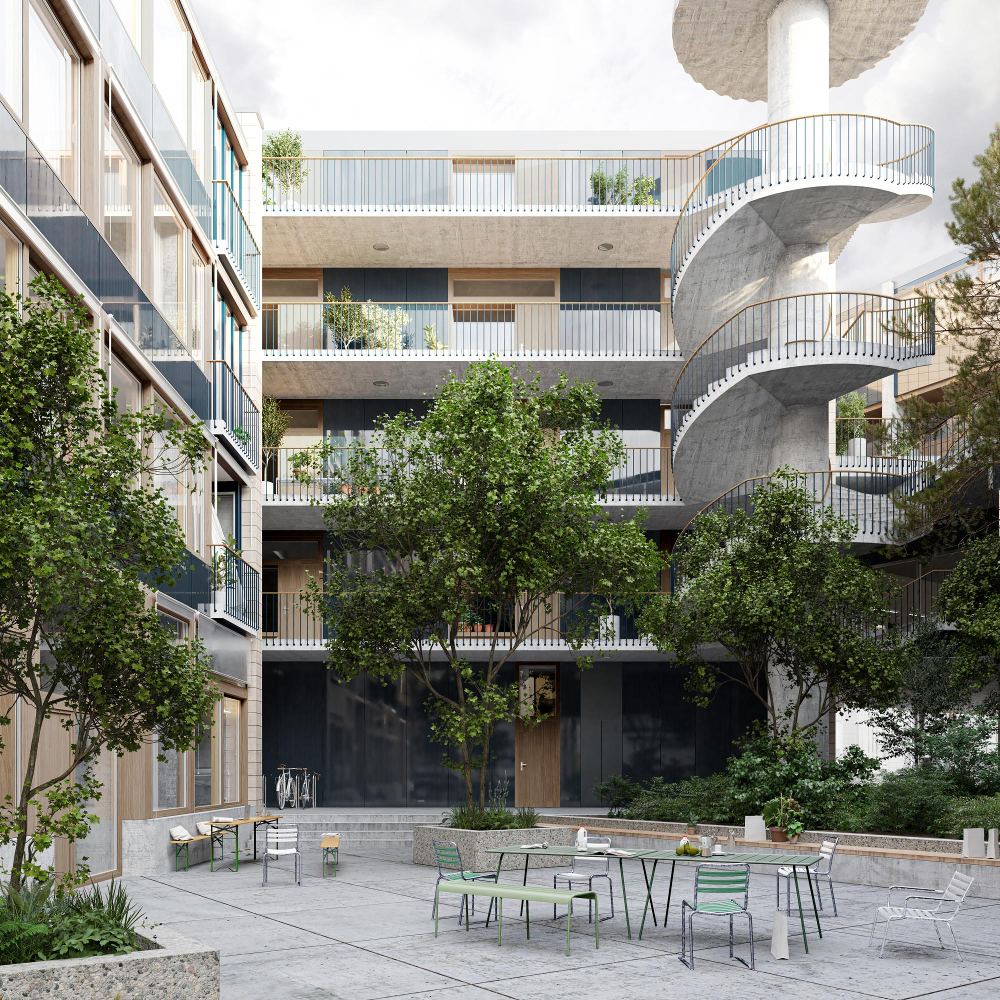

Architektin / Architekt mit Bauleitung
Zurich - Kreis 9 - Albisrieden
Baumgartner Loewe Architekten
Wir suchen ab sofort oder nach Vereinbarung eine Architektin oder einen Architekten Ausführung mit Lust auf Bauleitung. Sie verfügen über Berufserfahrung in der Schweiz und haben Interesse an der Planung und Umsetzung von anspruchsvollen Projekten. Sie zeigen grosses Engagement und gestalterische Kompetenz für die sorgfältige architektonische und konstruktive Ausformulierung des Projekts in der Planung und Umsetzung auf der Baustelle. Gute mündliche und schriftliche Deutschkenntnisse werden vorausgesetzt. Wir bieten Ihnen ein persönliches Arbeitsumfeld in einem jungen und kollegialen Team mit Raum, sich selber einzubringen und weiterzuentwickeln.
